Tutorials
Flexible Box Layout module
Aim: After this tutorial, students are assumed to understand and use the Flexbox layout module of CSS.Source Code: https://github.com/bmanandhar/flexbox-intro
Demonstration: By creating dice having one dot thru six dots using a text editor
In this tutorial, I will teach you how to manipulate the display layout of multiple objects that we have on an HTML page using the Flexbox layout modules. The Flexbox layout, officially called CSS Flexible Box Layout Module, is a new layout in CSS3 made to improve the items align, directions and order in the container even when they are with dynamic or even unknown size. I suggest you to follow all the steps carefully and try to understand each point with patience. If you fail to understand any of the steps, please re-read unless you understand it. Most of the video tutorials I found are not easy to follow because students find it difficult to follow in parallel with the texts. In this tutorial, you can pause and go to any point of the steps that you did not understand.
I Assume the students have knowledge in the following fields:
- The latest version of Hypertext Markup Language, HTML5
- Cascaded Style Sheet (CSS3)
- How to use a browser to view an HTML page
- Hot to relate CSS file to the HTML file that we write
- How to use commands on terminal or command prompt, and Graphical User Interface
Many designers and developers find the flexbox layout easier to use, as the positioning of the elements is simpler thus more complex layouts can be achieved with less code, leading to a simpler development process. Flexbox layout algorithm is direction based unlike the block or inline layout which are vertically and horizontally based. The flexbox layout should be used for small application components, while the new CSS Grid Layout Module is emerging to handle the large scale layouts.
Here, I will describe the basics of Flexbox so that students can learn more about it later following different resources. As everybody is aware that we have two axes on the computer display system in positioning items, horizontal and vertical. Flexbox by default follows horizontal direction unless defined otherwise. After defining the main axis and cross axis, items can be positioned along both the axes. Here in this lesson, we will first learn how to position every item on the axes. Then we can move on to how to style single item individually in either the main axis or the cross axis.
Now let us start writing the codebase.
- For the demonstration, I will create a directory(folder) with the name "flexbox-intro" in which I will have files "index.html" and "style.css". Please note I do not use javaScript in this lesson. Now, I will create a number of dice using different attributes in the HTML file and flexbox properties in the CSS file. I hope this will be intuitive and keep you guys engaging until you understand it. We can do so by using the Terminal on Macbook computer or Comand Prompt on Windows. We will use the commands (a) "mkdir flexbox-intro", (b) "cd flexbox-intro", and (c) "touch index.html style.css". We can create folders and files by using the GUI as well, it's upto you. Now open the directory (or folder) using a text editor. I will use the Visual Code text editor in this case. However, you can use Atom, Sublime, or anything you prefer.
-
Create a dice: Let us now write the basic head section on the HTML file, and the link tag with the href value as style.css. Then, between the opening and closing tags of the body, let us create a div element with a class of "dice". Within this element, let us create another div element with the class of "dot". The div element with the class of "dot " is now a child of the div element that has the class of "dice". Let us go to style.css file now, and give values of 100px each to properties "width" and "height" for the class "dice" repesenting the squared face of a dice. Now if you open the index.html file on any browser of the computer, there are nothing visible on the screen. This can be done by using the command "open index.html" or if you prefer to use the GUI, just by double-clicking the index.html file in the folder. We do not see anything on the screen because the color of the dice enherits the background color of the screen itself having nothing is in contrast visibly.
- Now that an empty face of the dice is created. Next, I am going to fill the face with a dot by using the id attribute of "dot" in the HTML file. Let us give this attribute the properties "width" and "height" of 30px each and "background-color" as black, and check how does it look like. We can see a small black square on the top left corner of the dice, that really is ugly and is not the item I wanted. Hence, let us have a property of border-radius to the dot and its value as 50% to convert it into a circle. Nice! it takes a better shape now, doesn't it? But we all know that a dice should have faces with at least one dot on the middle. We will use the flexbox layout in order to fix this.
- I will give it a border of "2px solid black". Now, a square of 100px by a00px with black border is visible. I am not satisfied with what I created as a dice. I then make its corners a curved shape as most dice have, "border-radius" property with value 10px. Now, let's check how the dice looks like. Yeah! we got it exactly looking like the dice that I wanted. However, it's up to you how do you want its shape, size, and color to be.
- Now, let's go back to the "dice" for a while. Most of us should have seen dice have the dots on its faces which are not on its very edge but with some space from the edge, that will look better. To make this happen, let us give a margin of 5px on the class of "dice". Whoa! it looks nice and beautiful now, doesn't it? But we are not yet finished. Now let's work on the "dot" using flexbox layout to put the dot in the middle of the face.
-
Flexbox layout is a parent-child relationship. Whatever effect is to be given to an item, it needs to come from its parent element. I will give a "display" property to "dice" and its value is "flex", meaning now the child will follow a layout that flexbox will have by default, it's horizontal. It will control the orientation, alignment, spacing of the child flex-elements. You can also have a property of "flex-direction" with value "row", which still is the default value meaning the direction is horizontal from left to right. But if we need to go from right to left we can have its value as "row-reverse". I want to have all the dice in the middle of the body.
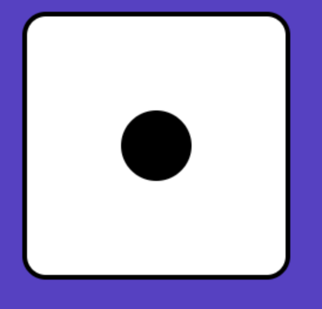 Face of the dice
- Now I will make the body a flex container itself so that we can play with the dice we create by placing at any position of the visible screen itself as we want. Then the property "flex-direction" is given a value of "row-reverse" so that we will create the dice starting from right to left successively. The property "justify-content" will bring the dice to the middle of the default axis, that is horizontally in this case. The property "align-items" brings the dice item to the middle of the cross axis, that is vertical in this case. But we are not yet able to get the dice all the way in the middle of the visible display because it does not know what exactly is the height of the cross axis since we have defined its axis in the horizontal direction as default. Hence, we need to give a value "100vh" to the property "height" so that it gets the dice right in the middle.
- Now we can see the position of the dice is always the center of the screen no matter what its size is. Similarly, we will want to get the "dot" to the middle of the "dice". We can do so by assigning the value "center" to properties "justify-content" and "align-items" of "dice".
- Now that we have created the dice that we wanted. Does it really look nice with the default white color all around? I think it will look better if the background color of the screen is something that is in contrast. Let the screen take a color other than black or white as background-color and check how does it look like. Oh no! this is not what I wanted, everything is in a single color except the black border and dot. Now in order to make the dice visibly distinct, let us assign the value "white" to the property "background-color" of the "dice" and see how will it look like. Good enough! it's amazing that the dice looks so nice and distinct. Now, we have the very first dice having a single dot in the middle. Next, we are going to build another dice with two dots.
- Next, we are going to create multiple dice and to use some of the styles as generic. Let us add classes "justify-center" and "align-center" to the element that already has the class "dice" and let their value be "justify-center" and "align-center" respectively. Then we can remove those properties that we assigned already to the class "dice". It will work exactly the same way that we had earlier
-
I will start by copy-pasting the HTML code that I wrote for the first dice. These two dice are found to be attached with each other, does not look nice!
I will now give a property of "margin" with value "0 5px" so that two dice will separate from each other a little bit. Now, we will have one more
"dot" within this "dice". We will then remove the extra classes "justify-center" and "align-center" that we added later. Now the two dots will
appear on the top of the dice grouped together on the left corner. The second dot of this dice is supposed to be on the bottom right corner,
the first dot being on its position of top left corner. I will add the class "justify-space-between" to the div having the class of "dice".
It separates the two dots placing them on each corner on the top. Since we have a margin of 5px already on "dice" the second dot also inherits
the same property and keeps a space between the "dot" and the edge. Now, the problem with us is how to bring the second "dot" down to the bottom
right corner. This can be done by having a class of "align-self-end" and assign its property as "align-self" and value "flex-end".
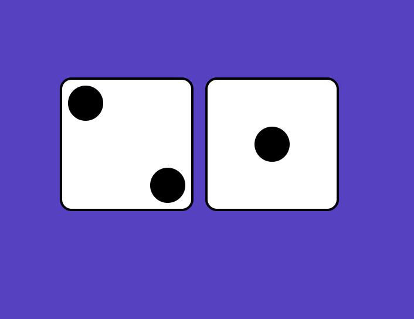 Two dice together
- Now, let's build another "dice" with two dots on it but opposite to the first one. That means the first "dot" on the top right corner and the second "dot" on the bottom left corner. Will you please think how to make this happen on the basis of the way we built the "dice" earlier.
-
I will copy the HTML code for dice-2 and paste it underneath. Then, I will create a CSS class of "row-reverse" property "flex-direction"
with value "row-reverse". Nice! I just got what I wanted. The "dice" just reversed. Isn't it interesting? Now, I am really quick at building
"dice". Am I not?
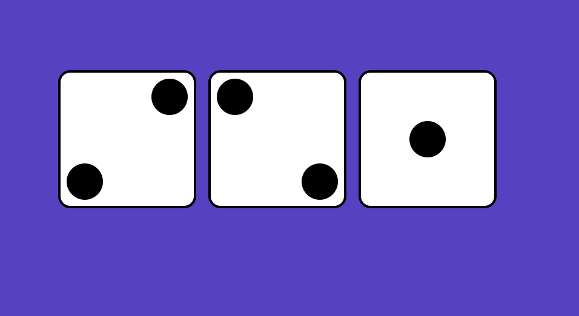 Three dice together
-
Let me build the dice-3 now. First, I will copy paste the HTML code that I wrote for the dice-2. Then I will add a third "dot" on it. Now the
"dot" we added appears next to the "dice" on the top, not the way we wanted it to look like. We will then have a new class called "align-self-center"
and we will give it a property of "align-self" with value as "center". Let this class be added to the third dice we added on HTML. The third "dot"
now appears in the middle of the dice, nice.
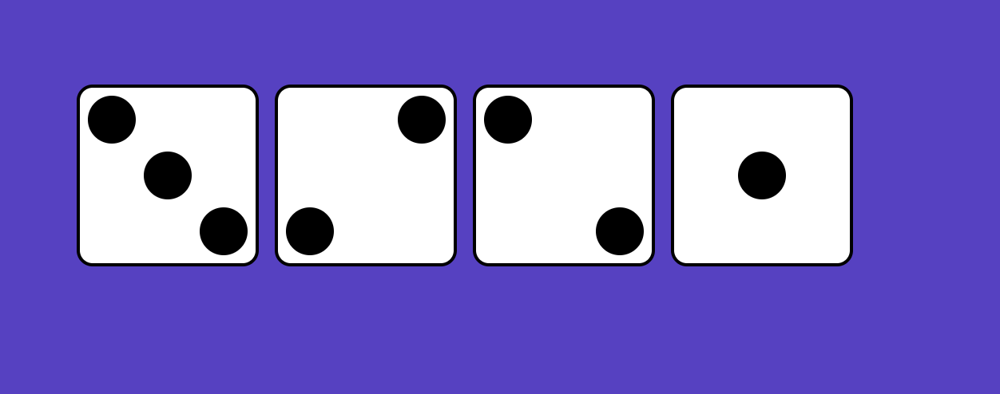 Dice 1-2-3 together
-
We will then build another dice-3 with reversed direction, that means the dots run from top right corner to bottom right corner. Start
imagining how to do this. We copy paste the HTML code that we wrote for the reversed dice-2. Then copy paste a new dot on this dice.
The new dot shows up on the top, next to the dot at the right corner. Now we need to style this individual dot so that it moves to the center.
We can do this by using the class "align-self-center" on this new dot. Wonderful! it worked.
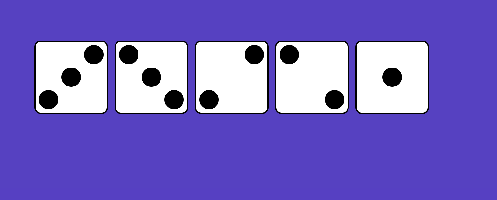 Two dice together
-
Next, we are going to create dice-4. This dice has two rows with two dots each. This will be a dice with flexbox container.
Inside this flexbox container, there will be two flexbox containers that are the children of the first one. These two items
will be styled with the "space-between" property. It has now two rows having two dots in each row. Since we did not declare anything,
it assumes the flex direction to row, and it has two rows. Now it has to be columns, the direction will be top to bottom instead of
left to right. In order to do that, we will create a class called "column" and give it a property of "flex-direction" and "column".
Now, everything lines up from top to bottom. This is not exactly what we need. The first two dice are to be in a row with the other two dice.
We will have a class "row" and give a property "display" with value "flex" meaning it to be in a row by default. Now all the four dots are attached
to each other. We already have the class called "justify-space-between" that will be applied to these rows. The columns now got separated from each other,
however, we still need to style them so that the lower dots move to the bottom. Okay, I think you can figure out how to make this happen. We will add a
class of "justify-space-between" to the parent element. Wow! It just appears now the way it should.
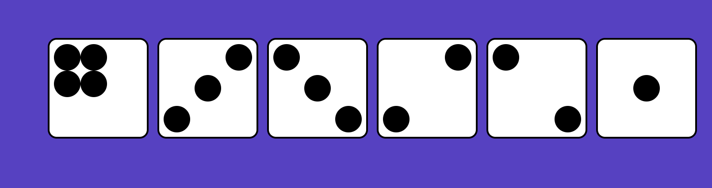 Dice-4
-
Now, we are creating dice-5. It is basically a dice-4 with an extra dot placed in the middle. It is almost the same how we created dice-3
using dice-2. Let us copy and paste the dice-4. Add another dot using the code using one of the children of dice-4 with one dot removed.
It gives us two columns with three dots and two dots. Now we need to move the second dot of the first column to the center. We will use the class
of "justify-center" in place of "justify-space-between" for this purpose. Beautiful! It just worked.
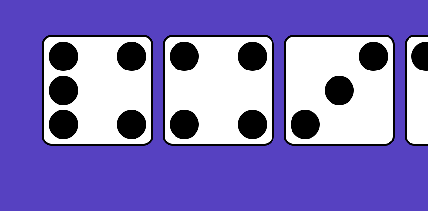 Dice-5 together
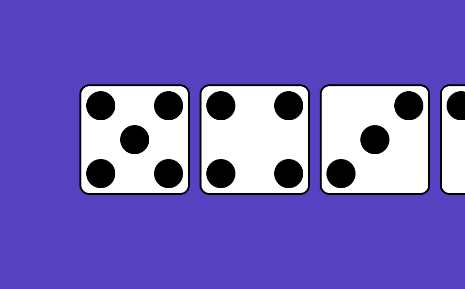 Dice-5 after
-
The only dice we need to create now is dice-6. We can do so by copying and pasting the HTML code for dice-5. Let us add a sixth dot in the middle row.
The two dots in the middle row appear grouped in the middle, not the way we wanted. It is so because its parent element has a class of "justify-center".
Now we will change this class to "justify-space-between". Now we have entire dice displayed on the screen using flexbox.
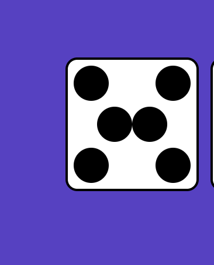 Dice-6
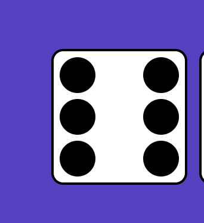 Dice-6 after
-
We will want one more dice-6 that appears to have two rows with three dots lined up together in each row. Let us create this by copy-pasting the HTML code
that we wrote for dice-4, add one extra "dot" on each row. Great! Thus we have the last dice-6 rotated 90 degrees.
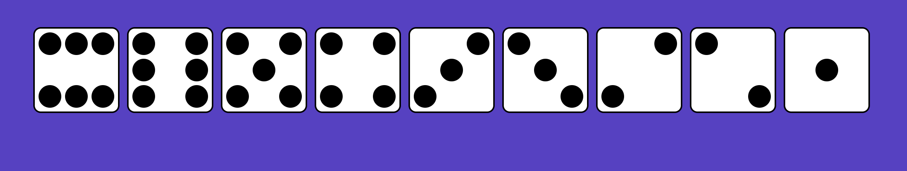 All dice
-
Now that we are done with all the dice. All the dice appear in a row. Is this layout okay to view on a screen with a shorter width? Let's try! Oh no!
when the screen is smaller, the dice get deformed in the shape, meaning the screen can not fit all the dice. How to prevent this not to happen?
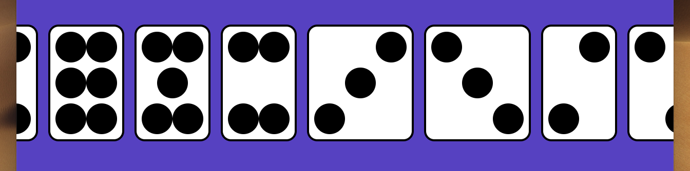 Dice deformed
-
Let us have a CSS property "flex-wrap" with the value "wrap", and check how does it work with different screen sizes. As the screen size changes,
the dice appear to be on rows stacking on each other. Also, the order of dice on the rows is something you need to learn why and how.
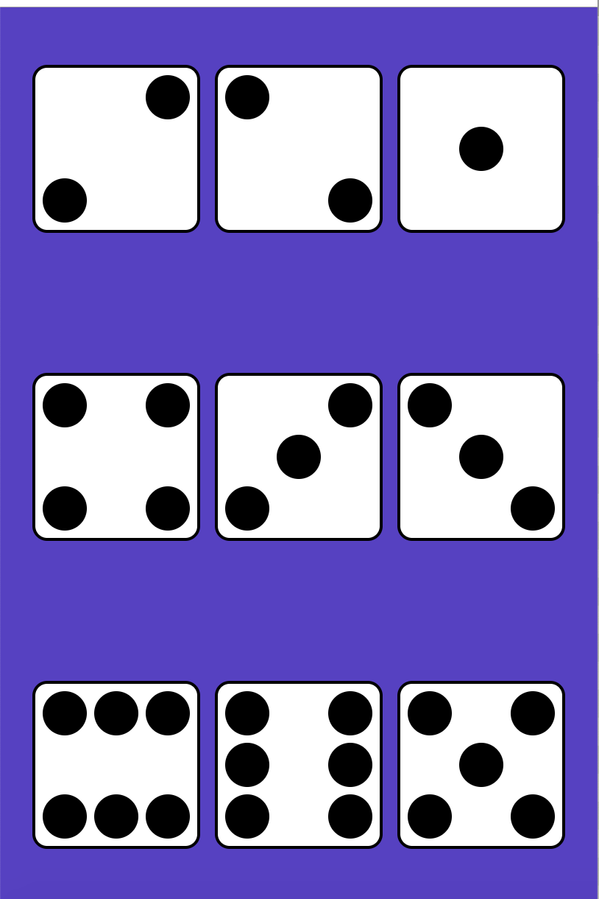 Dice wrap
- We can try the same thing by changing the value of "flex-wrap" to "wrap-reverse" and note the changes. Make yourself clear how it works. You can also work out by removing the "flex-direction" on the "body" tag so that it follows the default layout of row straight, not reverse.
I hope now that the basics of FlexBox layout on CSS is clear. I will advise you to keep working for some time with the code that we wrote till you understand. You can then dig into other properties that FlexBox layout can be use.
You can visit the open resource https://css-tricks.com/almanac/properties/f/flex/. Code base for the whole steps explained above is available here: https://github.com/bmanandhar/flexbox-intro.